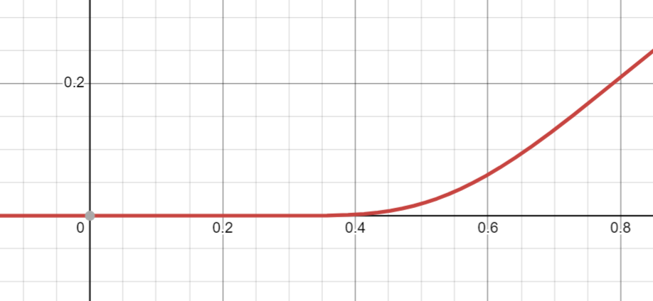

Определение: Пусть \(f(x) \subset C^{\infty}(B(x_0))\). Ряд \(\displaystyle \sum_{n = 0}^{\infty}\frac{f^{(n)}(x_0)}{n!}(x - x_0)^n\) – ряд Тейлора функции \(f(x)\).
\[f(x) = \begin{cases} e^{-\frac{1}{x^2}}, x \ne 0\\ 0, x = 0 \end{cases} \,\,\,\,\,\,\,\,\,\,\,\, g(x) \equiv 0\]
\[\displaystyle \sum_{n = 0}^{\infty}\frac{f^{(n)}(0)}{n!}x^n = \displaystyle \sum_{n = 0}^{\infty}0\cdot x^n = \displaystyle \sum_{n = 0}^{\infty}\frac{g^{(n)}(0)}{n!}x^n\]

Теорема: Пусть \(\displaystyle \sum_{n = 0}^{\infty}a_nx^n = f(x)\) в \(B(0)\). Тогда \(a_n = \frac{f^{(n)}(0)}{n!}\), то есть \(\displaystyle \sum_{n = 0}^{\infty}\frac{f^{(n)}(0)}{n!}x^n\) ряд Тейлора функции \(f(x)\).
Доказательство: Сумма степенного ряда бесконечно дифференцируема в интервале сходимости \(\,\,\,\,\blacksquare\)
Теорема: Пусть \(f(x) \in C^{\infty}(B(0))\) и \([-\delta, \delta] \subset B(0)\). Если \(\exists A > 0 \,\,\,\, \forall x \in [-\delta, \delta]\,\,\,\, \forall n \in \mathbb{N} \,\,\,\, |f^{(n)}(x)| < A^n\), то при \(x \in [-\delta, \delta] \,\,\,\, \displaystyle \sum_{n = 0}^{\infty}\frac{f^{(n)}(0)}{n!}x^n = f(x)\).
Доказательство: Оценим остаток формулы Тейлора:
\[\left|f(x) - \displaystyle \sum_{n = 0}^{N}\frac{f^{(n)}(0)}{n!}x^n\right| = \left|\frac{f^{(N + 1)}(\xi)}{(N + 1)!}x^{N + 1}\right| \leqslant \frac{A^{N + 1}\cdot \delta^{N + 1}}{(N + 1)!}\overset{N \to \infty}{\to} 0 \,\,\,\,\blacksquare\]